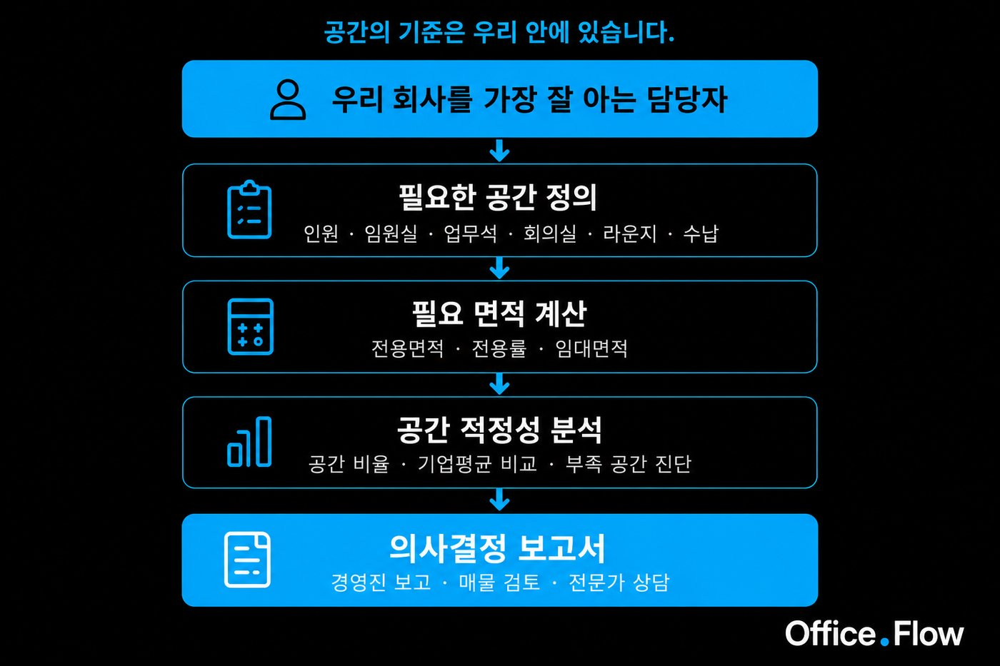
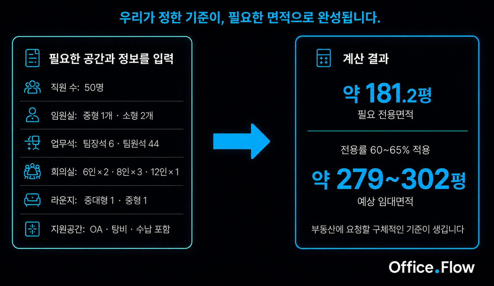
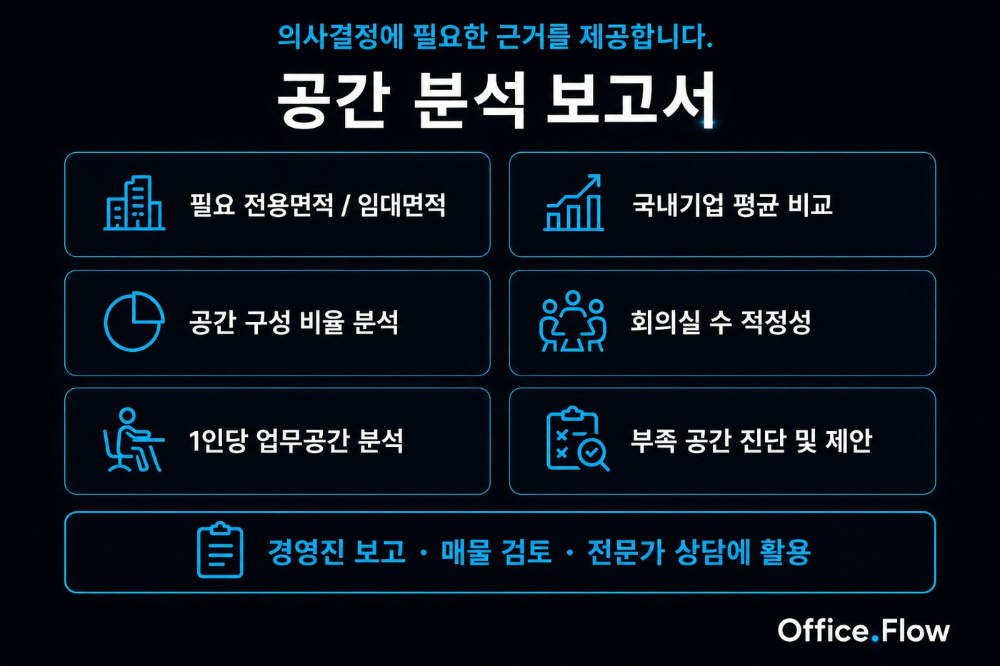
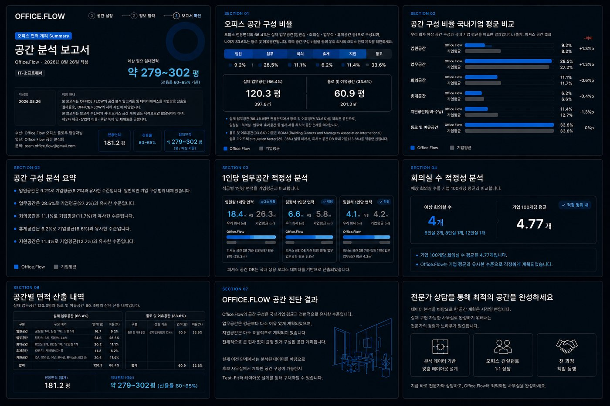
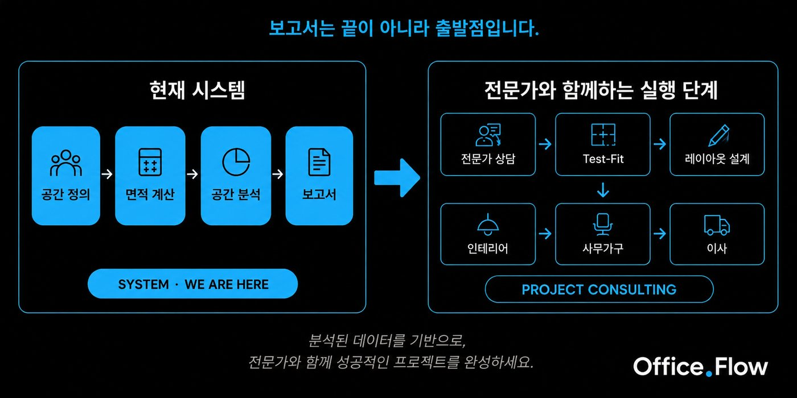

처음 맡은 담당자를 위한 사무실 이전 가이드
사무실 이전을 처음 맡으면 가장 먼저 부동산에 연락하게 됩니다. 그런데 부동산은 오히려 이렇게 묻습니다.
"몇 평 정도 보고 계세요?"
답을 모릅니다. 그래서 지금 사무실 평수를 말하거나, 직원 수에 몇 평을 곱해서 숫자를 만들어냅니다. 이때부터 판단 기준이 필요해집니다.
사무실 이전은 매물부터 찾는 것이 아닙니다. 우리 회사를 가장 잘 아는 담당자가 필요한 공간을 정의하고, 이를 숫자와 보고서로 만들어 의사결정의 기준을 세우는 것에서 시작합니다.
현재 직원이 몇 명인지, 앞으로 얼마나 늘어날지, 임원은 몇 명인지, 회의를 얼마나 자주 하는지, 외부 방문객이 많은지, 수납이 부족한지.
문제는 이 정보를 사무실 면적으로 바꾸는 방법을 모른다는 것입니다. 그래서 직원 수 × 몇 평 같은 단순한 방식으로 추정하게 됩니다. 하지만 같은 50명이라도 회의가 많은 회사와 개인 업무 중심의 회사는 필요한 공간 구성이 완전히 다릅니다.
OfficeFlow(오피스플로우)는 담당자가 알고 있는 우리 회사의 정보를 공간 계획에 필요한 숫자로 바꿉니다.

몇 평이 필요한지 OfficeFlow가 먼저 정하는 것이 아닙니다. 담당자가 우리 회사에 필요한 공간을 선택하는 것에서 시작합니다.
임원실·업무공간·회의실·라운지·지원공간처럼 실제 사용 목적이 있는 공간의 면적을 먼저 합산합니다. OfficeFlow에서는 이를 실제 업무공간이라고 부릅니다. 그런데 이 합계가 곧 필요한 전용면적이 되는 것은 아닙니다.
각 공간의 면적 외에도 사람이 이동하는 통로와 의자 사용, 가구 배치 등에 필요한 여유공간을 함께 고려해야 합니다. OfficeFlow는 최종 전용면적 중 33.6%를 통로 및 배치 여유공간으로 가정하고 있습니다.
※ OfficeFlow는 오피스 공간계획 시 통로와 배치에 필요한 여유공간을 고려하여 전체 전용면적의 33.6%를 계획 기준으로 적용합니다. 이 기준은 미국 GSA가 오피스 공간계획의 일반적 기준으로 제시한 Circulation Area 범위(Usable Area의 약 25~40%)와 국내 오피스 공간 DB의 공간구성 분석 데이터를 참고하여 설정한 OfficeFlow의 실무 계획 기준입니다. 실제 비율은 건물 형태와 공간 구성에 따라 달라질 수 있습니다.
참고: U.S. General Services Administration & Gensler, Circulation: Defining and Planning (2012). GSA는 일반적인 공간계획의 경험적 기준으로 Circulation Area가 전체 Usable Area의 약 25~40%를 차지한다고 설명합니다.
예를 들어 직원 50명을 기준으로 임원실·업무석·회의실·라운지·지원공간을 구성한 하나의 사례에서는, 통로와 배치 여유를 반영한 전용면적이 약 181평으로 계산됩니다.
※ 181평은 50명 기업의 표준값이 아니라, 위 공간 구성을 입력했을 때 산출되는 예시 결과입니다.
실제 업무공간 66.4% + 통로·배치 여유 33.6%
사무실 매물은 임대면적을 기준으로 안내되는 경우가 많기 때문에, 건물의 전용률을 적용해 임대면적까지 계산해야 합니다.
OfficeFlow가 초기 매물 검토에 사용하는 전용률 참고 범위
※ 위 범위는 서울 오피스 전체의 공식 통계가 아니라 OfficeFlow가 초기 매물 검토에 활용하는 실무적 비교 기준입니다. 실제 전용률은 건물별로 다릅니다.
검토 중인 건물의 전용률을 적용하면 필요한 임대면적을 계산할 수 있습니다.
예: 전용률 60~65% → 전용면적 ÷ 0.60~0.65
필요 임대면적을 먼저 계산해두면 부동산에 보다 정확한 조건으로 매물을 요청하고, 여러 매물을 같은 기준에서 비교할 수 있습니다.

181평이라는 숫자가 나왔다고 끝이 아닙니다. 그 공간 구성이 실제로 적절한지 확인해야 합니다.
업무공간 비율은 적당한가요? 회의공간은 부족하지 않나요? 휴게공간은 충분한가요?
OfficeFlow는 계산된 공간 구성을 보고서 내 비교 기준(국내기업 공간 구성 평균)과 대조해 분석합니다.
이 분석이 있어야 "지금 계획한 공간 구성이 우리 회사에 맞는가"를 판단할 수 있습니다.
의사결정자가 이렇게 물어볼 수 있습니다.
"왜 이만큼의 면적이 필요한데?" / "회의실은 왜 이 개수야?"
이때 필요한 것은 공간 구성 근거가 담긴 자료입니다. OfficeFlow는 입력한 공간 구성과 분석 결과를 바탕으로 공간 분석 보고서를 제공합니다.

이 보고서는 저장하고 공유할 수 있으며, 내부 검토와 경영진 보고 자료로 활용할 수 있습니다.
아래는 OfficeFlow에서 실제로 산출된 공간 분석 보고서 화면입니다. 예상 필요 임대면적, 공간 구성 비율, 국내기업 평균 비교, 공간별 면적 산출 내역까지 한 번에 확인할 수 있습니다.

공간 분석이 끝나면 비로소 매물을 볼 기준이 생깁니다.
"임대면적 약 279~302평을 검토하고 있습니다."
이 한 문장으로 부동산에 보다 구체적으로 요청할 수 있고, 여러 매물의 임대면적·전용면적·전용률을 비교할 수 있습니다.
OfficeFlow에서 필요한 면적을 확인했다면, 다음은 검토 중인 사무실에서 계획한 공간 구성이 실제로 가능한지 확인하는 단계입니다.
이 단계부터는 자동 분석이 아닌 전문가가 직접 참여하는 프로젝트 영역입니다.
검토 중인 매물과 이전 계획에 따라 공간 배치 검토(Test-Fit)와 레이아웃 설계를 진행하고, 필요에 따라 인테리어·사무가구·이사까지 실제 구축 과정으로 연결할 수 있습니다. 프로젝트의 범위와 진행 방식은 상담을 통해 결정되며, 향후 이러한 실행 과정도 OfficeFlow 안에서 단계적으로 연결해 나갈 예정입니다.
